Chapter 11. Report manager
This chapter provides an overview of Report manager, a powerful feature in the Early Warning, Alert and Response System (EWARS) that allows you to view, validate, search, amend and analyse reports with ease. “Reports” are the raw data collected and entered into the system by Reporting Users. Thus, the Report manager feature serves as a repository of all data related to each reporting form in the system, underscoring its importance. It allows reports in the system to be utilized for in-depth analysis and subsequent action.
11.1 Viewing reports
Using Report manager, you can view all reporting forms in the left-hand column, and related data appear at the right-hand side.
Example 1. View weekly EWARS reporting form reports.
- Select Menu > Report manager, and the screen below appears:
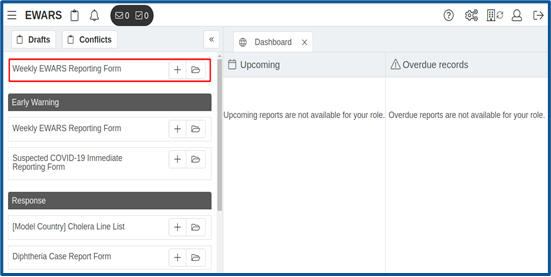
- Click on Weekly EWARS Reporting Form, and it opens, as shown below:
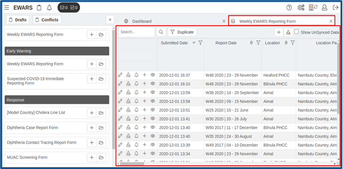
This shows the complete dataset of the data reported for the relevant form.
Each row represents a submitted report. Within each row, you can perform five functions, as depicted below:
edit/view the report
download the report
re-evaluate an alert
complete a sub form (if available) for the report
view sub form records (if any).
- Click on the edit/view icon of the submitted report, and the screen below appears:
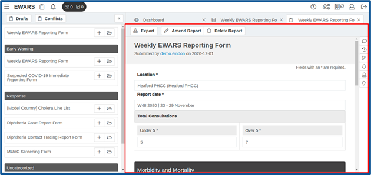
The edit/view function will enable you to view individual reports. It will also help you to make further edits as explained in topic 11.8 Amending a report and viewing amendment history below.
11.2 Searching a report
Report manager makes it easy to search specific reports. A keyword entered in the search box is matched against the data in the report. This facilitates early retrieval of the report the user wants.
- Select Menu > Report manager. Click on the name of the form (e.g. Weekly EWARS Reporting Form) > enter text into the search box (e.g. “100”). Click on the search icon, and reports that contain the search text are listed, as shown below:
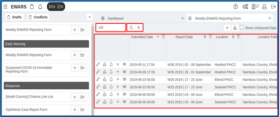
- Click on to clear the search.
11.3 Finding duplicate reports
Duplicate entries of a single report may exist in the system. EWARS helps to identify these so that they can be deleted to remove redundant data.
 Findin Findin |
g duplicate data entries is especially important in line listing or case-based data. This is one of the strategies EWARS uses to improve data quality. For example, in line lists, you may want to search for duplicates using three variables: name + age + primary health-care centre (PHCC). |
You can check for duplicate records that match the selected column values in two ways:
by selecting a single field
by selecting multiple fields.
For demonstration purposes, this guide uses the following example.
Example 1. Find duplicates in cholera line list with three variables: name of case, age and sex.
- Select Menu > Report manager. Click on the folder icon of the Cholera Line List > click on . Select the form fields Name of case, Age and Sex to filter > click on Apply, and the screen below appears:
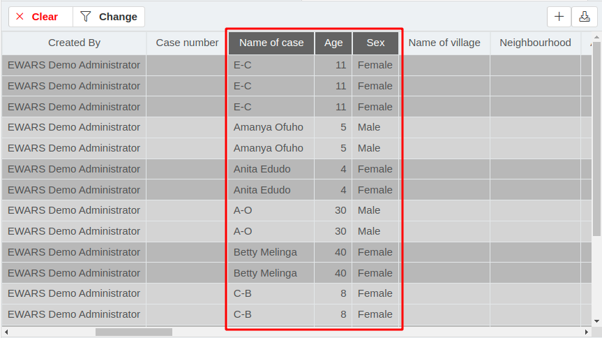
All matching rows are grouped together, and the groups are coloured alternately as shown in the screenshot above. Once you identify the duplicates, you can decide which to delete to leave only one correct report in the system.
Click on the edit icon of the duplicate report, and the report opens. Click on Delete Report > provide a reason for deletion (“duplication”) > click on Submit, and the duplicate report is deleted. Repeat these steps for other duplicates.
Click on to remove the filter.
11.4 Adding comments to reports
The feature allows you to add comments to reports; these are useful in report authentication. Users who view the reports can also view the complete thread of comments – a discussion associated with the report.
To add comments and view them, follow the steps below.
- Select Menu > Report manager > click on the folder icon of the relevant form. Click on the edit icon > click on the comment icon at the right-hand side, and the discussion screen below appears:
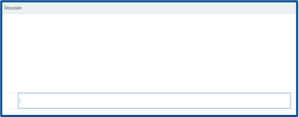
- Enter a comment (e.g. “The total cases reported for Cholera are 127. Verify it.”). Click Enter, and the comment is added. Comments are listed in chronological order and can only be seen under Report manager.
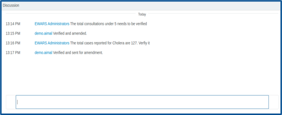
11.5 Viewing alerts triggered by reports and re-evaluating them
You can view the alerts triggered by reports and re-evaluate them, if they are found to be incorrect. Triggered alerts are recorded in the alert log. For more information, refer to Chapter 13. Alert log.
To view triggered alerts, follow the steps below.
- Select Menu > Report manager > click on the folder icon of the relevant form. Click on the edit icon> click on the alarm icon, and the screen below appears:
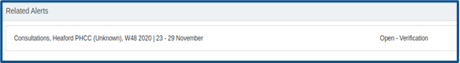
To re-evaluate associated alarms against the report, follow the steps below.
If a record is associated with an alarm, on submission of the report, the system automatically triggers an alert. This feature makes it easy to re-evaluate the alert, which means that you can revisit the alert management process.
- Select Menu > Report manager > click on the folder icon of the relevant form. Click on the alarm icon at the right-hand side, and the report is sent for re-evaluation.
For more detail, refer to Chapter 7. Alarms.
11.6 Downloading reports as PDF or Word files
The system allows you to download individual reports in two formats: PDF and Microsoft Word. These are easily printable formats, which is helpful in places where paper evidence is valued.
- Select Menu > Report manager > click on the folder icon of the relevant form. Click on the export icon, and the screen below appears:
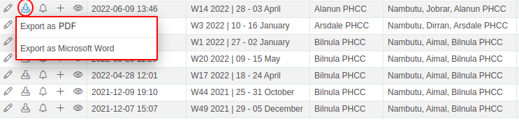
- Click on Export as PDF, and the file is downloaded. Open it, and it appears as below:
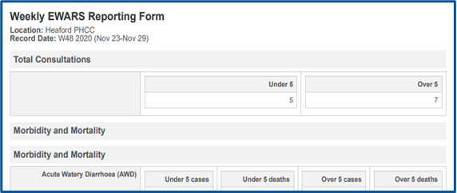
- Click on Export as Microsoft Word, and the file is downloaded. Open it, and it appears as below:
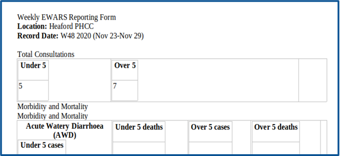
11.7 Downloading a blank report as a PDF or Word file
The system allows you to download blank reports in two formats: PDF and Microsoft Word. These are printable: you can print and use the paper formats for reporting, which is helpful in places where paper reporting is valued.
- Select Menu > Report manager. Click on the folder icon of the relevant form. Click on the export icon, and the screen below appears:
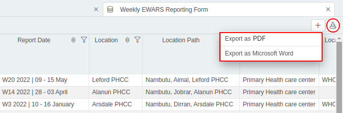
- Click on Export as PDF, and the file is downloaded. Open it, and it appears as below:
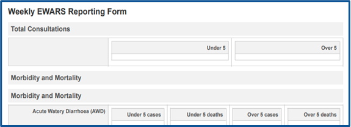
- Click on Export as Microsoft Word, and the file is downloaded. Open it, and it appears as below:
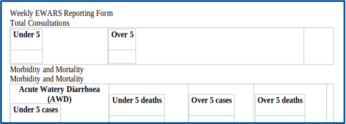
11.8 Amending a report and viewing amendment history
If you find any inaccurate entries, Report manager enables you to amend reports. You can also view the amendment history. Amendment of any submitted report requires the Account Administrator’s approval. You also need to enable the amendment, as described in Chapter 6. Forms, topic 6.8.5 Enabling approval requirement for amendments.
For example, if a Reporting User accidentally enters 10 cases of acute flaccid paralysis (AFP) (instead of 0 cases) for epidemiological week (epi week) 15, the report needs to be amended to reflect the correct number.
To amend a report, follow the steps below.
- Select Menu > Report manager > click on the folder icon of the relevant form. Click on the edit icon > click on , and the report opens in amendment mode, as shown below:
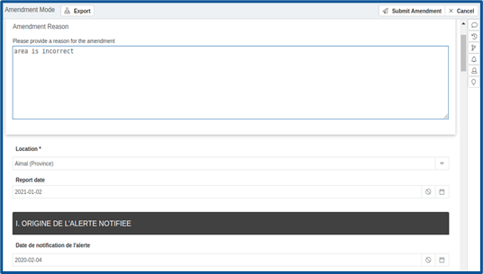
- Make the desired changes > provide a reason for the amendment > click on Submit Amendment.
You can view two different types of report amendment history.
To view the form submission history, which lists the submission date and time of any amendments, follow the steps below.
- Select Menu > Report manager. Click on the folder icon of the relevant form. Click on the edit icon > click on the report history icon at the right-hand side.
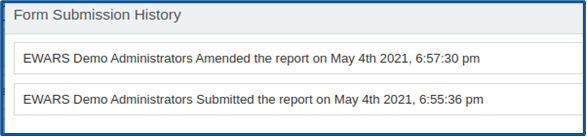
To view the original and revised values of the modified fields for each amendment, follow the steps below.
- Select Menu > Report manager > click on the folder icon of the relevant form. Click on the edit icon> click on the amendments
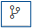
icon at the right-hand side, and a list of amendments appears, as shown below:
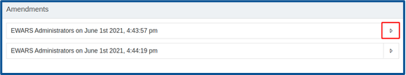
- Click on the expand icon to view the amendment details, as shown below:
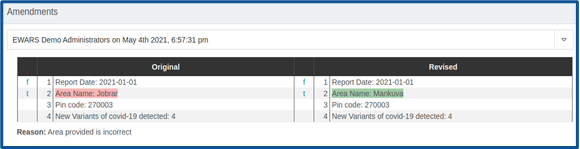
11.9 Deleting a report
The Account Administrator can delete any report that is entirely invalid or incorrect.
| Deleti |
ng records that are already submitted is not recommended. Each report should be submitted after careful consideration and data entry checks. |
- Select Menu > Report manager. Click on the folder icon of the relevant form. Click on the edit icon > click on and provide a reason for deletion. Click on Submit, and a notification appears that the report is deleted permanently.
11.10 Submitting a new report
In EWARS, most reports are submitted by Reporting Users, using EWARS Mobile. Web users like Account Administrators or Geographical Administrators using the web version of the system are not expected to submit reports. However, even these roles can submit reports during an emergency.
- Select Menu > Report manager. Click on the add icon on the right-hand side of the form name, and the screen below appears:
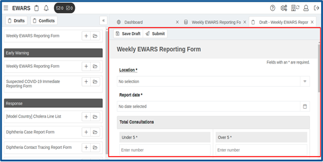
Populate the Location, Report date and remaining report fields.
Click on .
All mandatory fields need to be completed for any report to be submitted. If any mandatory field is not filled in, the system will flag this, and submission will fail. Once all the necessary fields are fille din, submission can be completed.
11.11 Saving a report as a draft
- Select Menu > Report manager. Click on the add icon at the right-hand side of the form name and the screen below appears:
Populate the Location, Report date and remaining report fields.
Click on , and the report is saved as a draft.
11.12 Editing and submitting a draft report
- Select Menu > Data Collection > Report manager > . Click on the edit icon > edit the desired field values > click on .
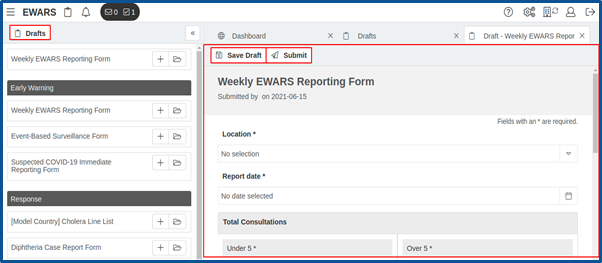
11.13 Deleting a draft report
- Select Menu > Data Collection > Report manager > . Click on the delete icon > click on Confirm, and the draft is deleted permanently.
11.14 Submitting a new sub form report
Sub forms enable you to add associated additional information to existing reports. For example, during an outbreak, cases can be captured through a line list, which is the main form, and a laboratory (lab) report form can act as a sub form for each record in the line list.
The sub form and the main form are linked via a unique identifier (ID), such as a government-issued unique card number, health card number, tax registration number, mobile phone number or any other unique generated code.
Most sub forms are submitted by Reporting Users. Web users are usually not tasked with submission of forms. However, if the Reporting User is a lab, there may be web users who submit sub forms via a web interface.
You can submit a sub form report by clicking directly on the sub form or navigating to the main report and selecting the sub form from it. Once the sub form is updated, the main form section is updated automatically.
Treat the sub form like any other form you submit. Unlike other forms, however, the sub form will have a field for a unique ID. This field, once filled, will connect the sub form to the main form. Having a unique ID will also enable automatic population of some fields that enhance case identification.
To submit a sub form report by clicking on the sub form directly (e.g. Cholera Lab test), follow the steps below.
- Select Menu > Report manager. Click on the add icon of the form (e.g. Cholera Lab test), and Cholera cases are listed with an add icon as shown below:
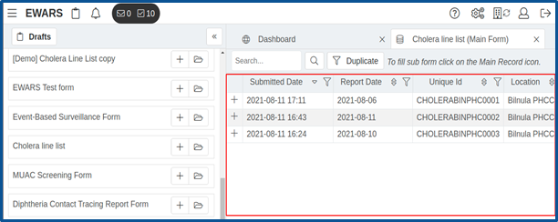
- Search by a unique case ID > look for the case > click on the add icon, and the Sub Form opens with automatically populated case details, as shown below:
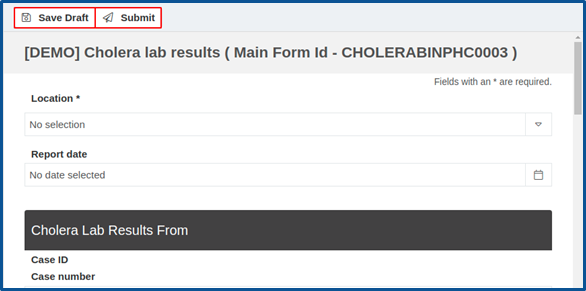
- Fill in the lab test details > click on Submit, and the report is submitted.
To submit a sub form report using the sub form option of the main report, follow the steps below.
- Select Menu > Report manager > click on the Cholera line list, and cholera cases are listed, as shown below:
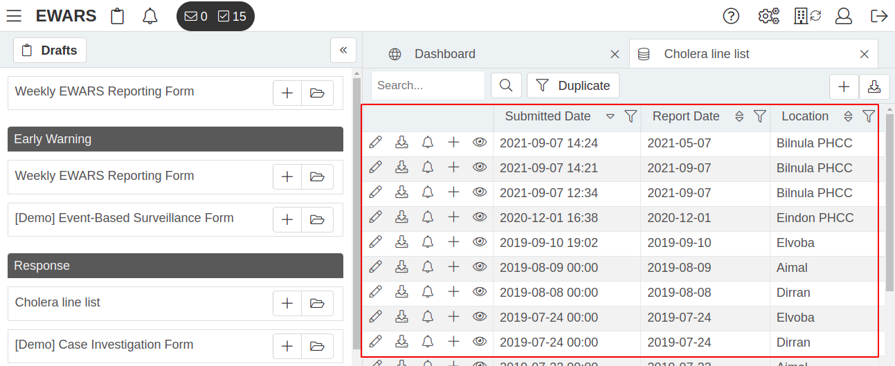
- Search for the unique ID of the relevant cholera case > look for the case > click on the add icon of the case. Click on the Cholera lab test Sub Form, and it opens, as shown below:
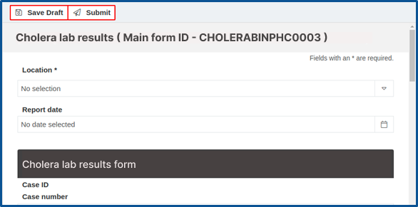
- Fill in the lab test details > click on Submit, and the report is submitted.
 Note: you can save the sub form report as a draft for future changes and submit it later. Note: you can save the sub form report as a draft for future changes and submit it later. |
The following chapter explores Monitoring and Evaluation (M&E) Auditor – an important feature that aids in the supervision of reporting.